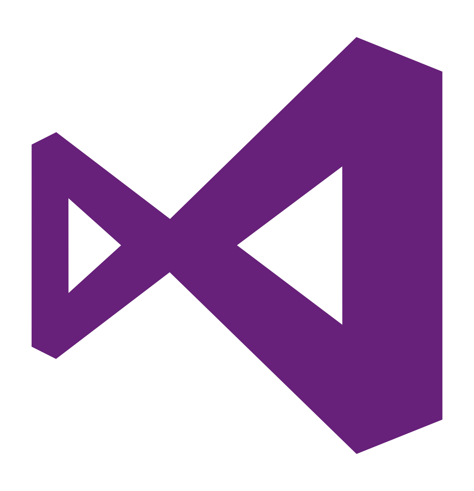

Héctor Sandoval
Apasionado por la calidad del software, con enfoque en garantizar aplicaciones sin errores, sin sorpresas y orientadas al usuario final. Experiencia en QA Automation & Functional Testing, centrado en la prevención de fallos y la entrega de productos sólidos y confiables. Amplio recorrido en pruebas unitarias, de integración, End-To-End, APIs, móviles y web, con una visión integral de la calidad. Automatización de procesos mediante herramientas como Selenium, Playwright, SpecFlow y Appium para mejorar eficiencia y cobertura. Contribución a la mejora continua del equipo a través de la optimización de pipelines en Azure DevOps y el uso de SonarQube. El rol de QA se entiende como un pilar clave para asegurar la confianza en cada entrega dentro de metodologías ágiles.
Educación
Grado Superior
Certificado de Profesionalidad Nivel III
Máster
Grado
Habilidades
-

-

-

- 
-

-

-

-

-

-

Experiencia en pruebas automatizadas y funcionales con herramientas como MSTest, NUnit, XUnit, Selenium, Playwright y Appium para web y móviles, incluyendo pruebas de APIs. Gestión de pipelines y releases en Azure DevOps usando YAML, además de automatizar migraciones con Azure DevOps CLI y PowerShell. Integración de servicios de Azure como Functions, Blob Storage y Service Bus, junto con pruebas de rendimiento utilizando JMeter y SFTP. También se emplean buenas prácticas de calidad de código con SonarQube, y trabajo en metodologías ágiles participando activamente en equipos Scrum para definir criterios de aceptación y gestionar tareas con Jira.
Experiencia
QA Automation & Functional Tester
Responsable de asegurar la calidad y fiabilidad de las aplicaciones desarrolladas, mediante la ejecución de pruebas automatizadas y funcionales en entornos .NET, web, móviles y APIs. Trabajo en estrecha colaboración con el equipo de desarrollo para garantizar la entrega de productos robustos y alineados con los estándares de calidad.
- Diseño y ejecución de pruebas unitarias, de integración y End-To-End con MSTest, NUnit, XUnit, Moq, SQLite, Fluent Assertions y paralelismo.
- Automatización de pruebas con SpecFlow y Selenium WebDriver / Playwright para web, y Appium para dispositivos Android.
- Pruebas automatizadas de APIs.
- Configuración y gestión de pipelines y releases con YAML en Azure DevOps.
- Automatización de migración de repositorios de TFS a Git con Azure DevOps CLI y PowerShell.
- Optimización de pipelines mediante agent pools personalizados.
- Pruebas unitarias e integración de Azure Functions, Azure Blob Storage y Azure Service Bus.
- Uso de SonarQube para detectar bugs, duplicaciones, code smells y cobertura de código.
- Participación activa en equipos Scrum, definiendo criterios de aceptación y gestionando tareas en Jira.
- Ejecución de pruebas de carga con JMeter utilizando protocolo SSH SFTP (Test Plans, Thread Groups, Samplers y configuraciones).
Programador Junior .NET
Colaboración activa en el desarrollo de aplicaciones web y optimización de procesos, utilizando tecnologías como .NET, Entity Framework y LINQ. Asegurando una correcta integración y visualización de datos.
- Implementación y validación de formularios en aplicaciones web.
- Conexión con bases de datos mediante Entity Framework.
- Operaciones CRUD (Crear, Leer, Actualizar, Eliminar) implementadas con .NET.
- Uso de Telerik para la visualización de datos y mejorar la experiencia de usuario.
- Manejo de datos con LINQ, optimizando consultas y acceso a datos.
- Colaboración activa en equipos Scrum utilizando la metodología ágil y gestión de tareas a través de Jira.